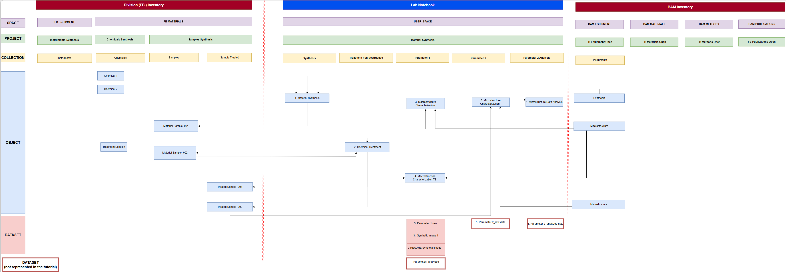
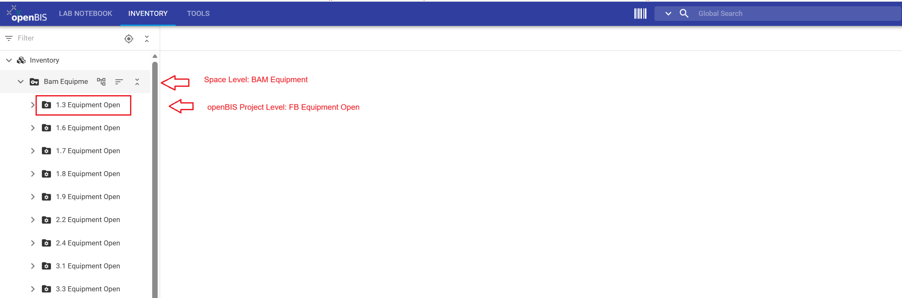
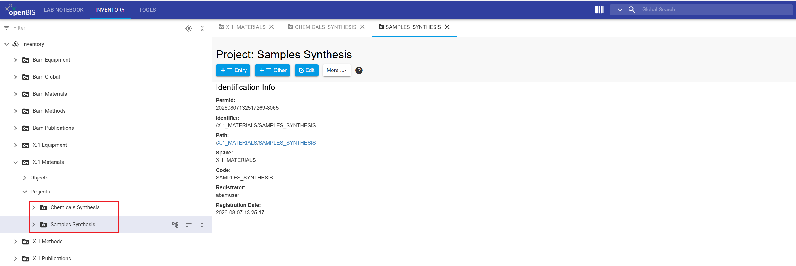
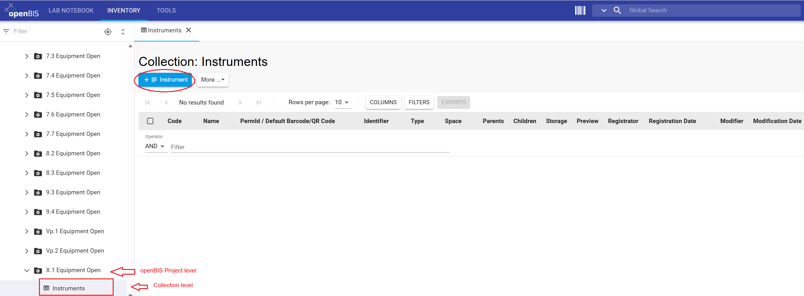
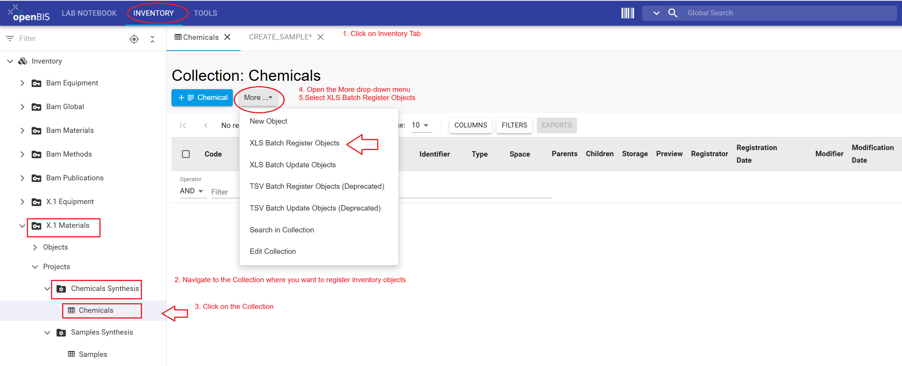
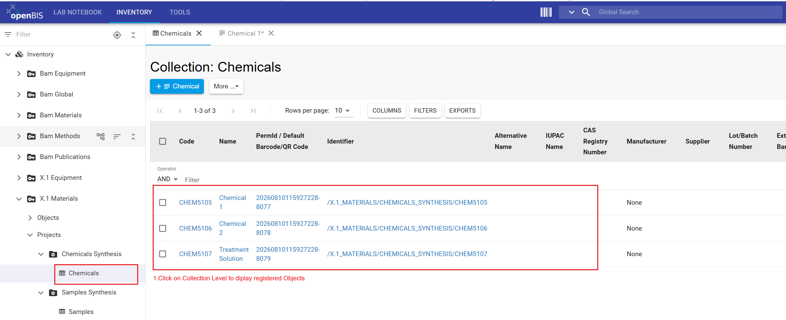

This tutorial shows division members who have been assigned the role Group Admin in the Data Store (Data Store Stewards (DSSts), division leads and their deputies) how to register inventory objects used in a synthetic example called "Material Synthesis." It also
explains how to enable collaborators to link these inventory items. Consistently registering inventory items and linking them to the experimental steps registered in the ELN improves the traceability, discoverability, reusability, and reproducibility of research data.
What you will learn
How to register inventory objects in BAM and FB inventory using the graphical user interface (GUI) of the openBIS Data Store
How to manage access to inventory objects
Before you begin
This tutorial requires no prior experience with openBIS and is designed for openBIS version 20.10.12.
You need to have access in the openBIS instance of the BAM Data Store (access restricted to BAM employees with VPN connection).
You must be assigned a Group Admin role in Data Store. This role is assigned to Division leads, their deputies and assigned and Data Store Stewards whose names have been communicated to the Data Store team. Check your assigned role to confirm that you have sufficient rights to complete the steps in this tutorial. To do this, follow the Data Store-How to guide: How to display assigned roles in the instance
If you encounter problems, contact the Data Store team
Download Excel files
Excel files are needed to batch-register objects as described in step 3. Download the following two Excel files.
The diagram shows the logical workflow used in this tutorial. Instruments and chemicals are examples of inputs or "things you have" (purple boxes). Samples are for example outputs or "things you generate" (green boxes).
Figure 1: Research workflow represented for the tutorial example. In this tutorial, the "things you have" and the "things you generate" will be represented.
openBIS Data Model
This tutorial uses the openBIS hierarchy: Space / Project / Collection / Object / Dataset. The hierarchy is used in BAM Inventory, FB Inventory and ELN.
In this tutorial, you will work with BAM Inventory and FB Inventory.
Important Note:
Starting with openBIS version 20.10.12, the core data model was extended to include folders and subfolders. Although this feature may provide additional flexibility and resemble the folder structures
commonly used in Windows file systems, the Data Store team recommends primarily using the core openBIS data model (Project → Collection → Object → Dataset) instead of organizing data through folders.
This recommendation is based on the following advantages:
Maintaining a lean and clear organization of objects within collections
Keeping the left-hand Lab Notebook menu concise and easier to navigate
Improving the consistency and discoverability of research data
Supporting standardized and scalable data organization across projects and divisions
Encouraging the use of metadata and object relationships instead of file-system-like structures
For most research workflows, representing data in Collections and connecting related objects (for example Instruments, chemicals and samples with experimental steps) using parent–child relationships provides a more robust and sustainable approach than using nested folder structures.
In openBIS everything is represented as objects. In this tutorial, the inventory objects used for the research project named 'Material Synthesis' are organized in several collections within the FB and the BAM Inventory. These collections are named logically to organize Instruments and Chemicals used in the research workflow of this tutorial example.

Figure 2: All items ("things you have") or inputs and ("things you generate") or outputs for this tutorial example, are represented as inventory objects of BAM Inventory (Instruments) and FB Inventory (Chemicals).
Inventory
The Inventory sections for the Data Store are FB Inventory and BAM Inventory. Once objects are registered in the FB Inventory, they are visible only to division members. Objects registered in the BAM Inventory are visible to BAM members.
Each division has four workspaces (Spaces in openBIS); Equipment, Materials, Methods and Publications in FB and BAM Inventory. These Spaces are labeled as X.1 Equipment (in FB Inventory) and as BAM Equipment (in BAM Inventory) with an additional sub-level (openBIS project) labeled with the division number X.1 Equipment Open, X.1 Materials Open, etc.
The inventory Spaces are used to organize "things you have" (Figure 1), tangible or non-tangible. For example, equipment, materials, methods (standard operating Procedures /SOP) used in workflows to generate research data must be registered in the Data Store. Note that within the Inventory Spaces, you find a Space called Publications. The use of this Space is optional and does not replace the purpose of the BAM database Publica to store publications metadata.
What should be registered?
Not every inventory items used by a division needs to be registered in the Data Store. Register items whose metadata is needed to understand, trace, or reproduce the resulting research data-for example instrument, chemicals and samples and link them to experimental steps.
In standardization processes, for example, the calibration date (metadata) of an instrument, is required for certification and evaluation. Therefore, instruments used in these workflows need to be registered and linked to experimental steps in the Data Store.
These connections are established through user-defined parent-child relationships.
Figure 3: The Data Store has two inventory compartments, the BAM Inventory and the FB Inventory to display them, click on the upper INVENTORY tab and navigate both inventories in the left-hand menu.

Figure 4: The BAM Inventory compartment contains a pre-defined openBIS project for each division. For example, X.1 Equipment Open. Here, divisions should register large devices and BAM instruments used by more than one division.
Figure 5: In this tutorial, you will register inventory objects within the BAM Inventory, in the X.1 Equipment Open project level and within the FB inventory in the X.1 Materials space level according to the rights related to you Group Admin role.
Exercises
This tutorial example demonstrates a simplified workflow for the synthesis and characterization of a material before and after a non-destructive chemical treatment. The example has been intentionally simplified so that you can focus on learning how to use the openBIS Data Store rather than on the scientific details of the workflow.
This tutorial guides you through the following steps:
1. Register a Project
2. Register inventory collections
3. Register multiple objects with Excel files (batch registration)
4. Manage access rights for collaborators
Step 1: Register openBIS projects in FB-Inventory
Users with sufficient rights (Data Store Stewards, FB leads and their deputies) will create two openBIS projects (CHEMICALS and SAMPLES) in the FB Inventory to represent inventory items used in the Material Synthesis research workflow implemented in this tutorial example. Other division members do not have sufficient rights to create openBIS projects in the FB inventory. In this tutorial (step 4), DSSts will learn how to give access to division colleagues to enable them to register and link these inventory objects.
Instructions for registering an openBIS project:
Click the upper INVENTORY tab in the upper navigation bar
In the left-hand menu, open the Inventory drop-down menu to select your FB Materials (X.1 Materials)
Click + Project to open the new project form
Enter the project information, Code and Description copy paste values from the table below
Review all entries and click Save
Repeat steps 1 to 5 to register openBIS projects CHEMICALS_SYNTHESIS and SAMPLES_SYNTHESIS (follow the table below)
Values to register each openBIS project
*FB Inventory
Space Name
Code
Description
1
*FB Inventory
*FB Materials
CHEMICALS_SYNTHESIS
Chemicals used in the "Material Synthesis" tutorial example. The records are fictional and intended solely for training and demonstration purposes.//Chemikalien aus dem Tutorial Beispiel „Material Synthesis“. Die Einträge sind fiktiv und dienen ausschließlich Schulungs- und Demonstrationszwecken.
2
*FB Inventory
*FB Materials
SAMPLES_SYNTHESIS
Samples generated in the "Material Synthesis" tutorial example. The records are fictional and intended solely for training and demonstration purposes.//Proben aus dem Tutorial Beispiel "Material Synthesis". Die Einträge sind fiktiv und dienen ausschließlich Schulungs- und Demonstrationszwecken.
*FB corresponds to your division number, for example X.1.
Figure 6: The INVENTORY tab provides access to the Inventory navigation menu on the left-hand side. Select the X.1 Materials (replace X.1 by your FB number) Space to edit it using the central panel tabs.
General information
This section provides guidance for completing the openBIS project form.
Code requirements
Mandatory fields in openBIS are marked with an asterisk (*)
Codes should be meaningful, in English, and between 3 and 30 characters
A code cannot be modified or reused
Description requirements
Mandatory for BAM Data Store
Should contain enough detail to be understandable to people outside the group
Should follow the format: English//German
Should contain 2 to 50 words
Warning: If the Code field is not displayed and you encounter a white page, click the More drop-down menu and select Show Identification Info.
Figure 7: To display Code and Description, if hidden, use the More drop-down menu to display options.Figure 8: Enter Code (*) (mandatory in openBIS) and a Description (Mandatory for Data Store). Review the entries and Save.
Warning: Once an openBIS project has been saved, its project code cannot be modified or reused within the same openBIS instance. To delete a project, select
it in the left-hand menu, open the More drop-down menu, and select Delete. A project level can only be deleted if it is empty. Therefore, all collections within this level
must be deleted first before the project itself can be deleted.

Figure 9: The new projects registered within X.1 Materials (you should see your division number instead of X.1) are displayed in the left-hand menu.
CONGRATULATIONS!!, you have created two openBIS projects within your FB Inventory.
Step 2: Register Inventory Collections in BAM and FB Inventory
A project can contain multiple collections to organize inventory items. Collections provide a logical structure for grouping objects and facilitate navigation, data management, and data retrieval. In this tutorial example, you will create three collections and use two of them in step 3. The third collection (Samples) is used by your division colleagues to register samples when they implement their "inventory-users" tutorial.
Instructions for Creating a Collection:
In the left-hand navigation menu, navigate to Inventory Space (Space Name follow table below)
Select the openBIS project you want to organize collections (Project Name follow table below)
Click + Other
From the drop-down menu, Select Collection
Leave autogenerated Code(*) unchanged
Enter (Collection Name tableed in table below)
Select an Object type from the Default object type drop-down menu (Object Type follow table below)
Select List view as the Default collection view
Review all entries and click Save
Repeat steps 1 to 9 to register a total of three collections Chemicals, Samples and Instruments (follow the table below)
General information
It is possible to register openBIS collections with or without a predefined object type. If you define an object type, as described above, the + Object Type button will appear in the collection view, allowing users to register new objects of the defined type directly from the collection view. If you leave the object type empty, the + Sample button appears instead and users must select the object type for the objects they wish to register.
Values to enter to register each Collection
Inventory
Space Name
Project Name
Collection Name
Object Type
1
*FB Inventory
*FB Materials
Chemicals Synthesis
Chemicals
Chemical
2
*FB Inventory
*FB Materials
Samples Synthesis
Samples
Sample
3
BAM Inventory
BAM Equipment
*FB Equipment Open
Instruments
Instrument
*FB corresponds to your division number, for example X.1.
Figure 10: The Chemicals and Samples collections registered in FB Inventory are displayed in the left-hand menu. Click the upper tab Inventory and open the FB Materials drop-down menu for your division number to display the collection.

Figure 11: The Instruments collection registered in BAM-inventory for your division is displayed in the left-hand menu. Click the upper tab Inventory and open FB Equipment drop-down menu for your division number to display the collections.
CONGRATULATIONS!!, you have created three collections, one in BAM-inventory and two in your FB-inventory.
Tangible inventory items, such as instruments and samples, and intangible items, such as standard operating procedures and software, are represented in openBIS as Objects. An object type defines
the properties available for a particular category of objects. In this tutorial, we will register objects of the type Chemical in the FB Inventory and Instrument in the BAM-inventory.
General information
Batch registration enables to register more than one object at a time. In a separate tutorial we will be using the Batch update option to update existing objects. If you want to register a single object, instead of clicking on the More drop-down menu, select the +Chemical or +Instrument button, complete the object form and Save.
Instructions for registering Objects in the inventory:
In the left-hand menu, navigate to the Collection name you want to use to register the objects (follow table below)
Open the More drop-down menu and select XLS Batch Register Objects
In the Register Objects window, click on Datei auswählen (choose file), select the Excel file containing the objects to register (follow table below)
Review the name displayed for the uploaded Excel file and click the Accept button
Registered objects will be displayed within each corresponding collection as indicated in the table below. To display them, navigate to the corresponding collection in the left menu
Repeat steps 1 to 5 to register Chemicals and Instruments (follow the table below)
Values and files to batch-register objects
Inventory
Space Name
Project Name
Collection Name
Batch update file
1
*FB Inventory
*FB Materials
Chemicals Synthesis
Chemicals
Chemicals.xlsx
2
BAM Inventory
BAM Equipment
*FB Equipment Open
Instruments
Instruments.xlsx
*FB corresponds to your division number, for example X.1.

Figure 12: Select the Collection (Chemicals or Instruments) in the left-hand menu. open the More drop-down menu and choose XLS Batch Register Objects.Figure 13: Click Datei auswählen, select the corresponding Excel file (chemicals or instruments), and click Accept.

Figure 14: The registered objects in FB inventory are displayed once you click on the Chemicals collection.Figure 15: The registered objects in BAM Inventory are displayed once you click on the Instruments collection.
CONGRATULATIONS!!, you have batch registered Chemicals and Instruments for your division. To enable colleagues to link these inventory objects to their experimental steps registered in their ELN, you will manage access in Step 4 of this tutorial.
In openBIS, access permissions can be assigned at the
space and project levels. For detailed
information about the roles and permissions defined by default in the
Data Store, see the
Rights and Roles concept in the Data Store wiki
(accessible only to BAM members).
In the FB Inventory, Data Store Stewards (DSSts) can create projects and
manage access. Other division members can work with inventory content in
their division FB Inventory spaces, but they cannot create projects or manage project-level access.
When contributors from another division need to edit inventory objects or
define connections between objects, a DSSt need to grant the User role for the relevant
FB Inventory project to an individual contributor or a group of contributors
The BAM Inventory should be used for resources that are shared by multiple divisions and whose metadata
should be visible to all BAM members—for example, large instruments used across the institution.
The FB Inventory is more appropriate when inventory objects belong to a division or when access must be
limited to specific collaborators. This may apply, for example, when samples produced by one division are
measured by another division or when one division generates data as a service for another. In such cases,
register the inventory objects in the appropriate FB Inventory space, organize them in a dedicated project,
and grant project-level access to the collaborators who require it.
By default, members of a division have the User role for their FB Inventory spaces,
such as /X.1_EQUIPMENT. They can therefore view and edit inventory content in those spaces, but they cannot create projects or manage access.
In BAM Inventory spaces, such as /BAM_EQUIPMENT, the BAM group has the Observer role.
This allows BAM members to view the contents of the space. Each division group has the User role for its corresponding
division-specific project, such as /BAM_EQUIPMENT/X.1_EQUIPMENT_OPEN. Members of that division can therefore edit inventory content within the project.
DSSts can manage access in the FB Inventory but not in the BAM Inventory. Permissions in the BAM Inventory are managed centrally.
If a division requires additional permissions or needs existing permissions to be restricted, contact the Data Store team.
Access assigned to an openBIS Space or Project in the FB Inventory can be revoked or modified by division members with sufficient rights such as DSSts, FB leads and their deputies.
Instructions to grant another division access to a project in the FB Inventory:
In the left-hand menu, select the relevant project in the FB inventory
Click on the More drop-down menu and select Manage access
From the Role drop-down menu, select User
From the grant to drop-down menu, select Group to grant access to an entire division, or User to grant access to an individual
In the Group or User field, enter the division’s group identifier if you selected Group, or the person’s username if you selected User
Verify the selected role and recipient, and then click Grant access
CONGRATULATIONS!!, You have an overview on roles and rights and understand how to manage access in the Data Store inventory.
After completing this tutorial, you should be able to create inventory projects and collections, batch-register objects in the BAM and FB Inventories, explain the
organizational differences between the two inventories and can manage project-level access in the FB Inventory.